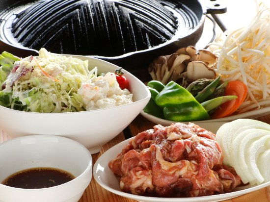
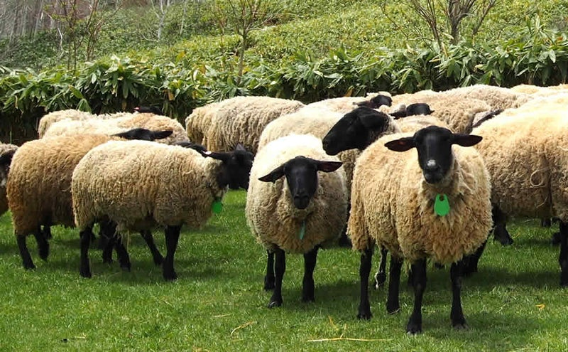
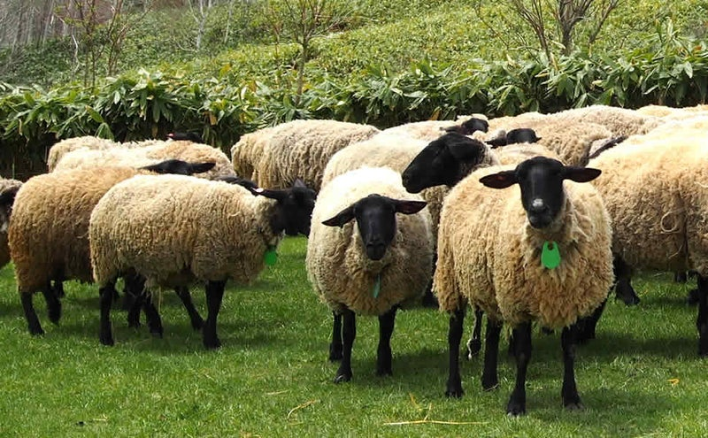
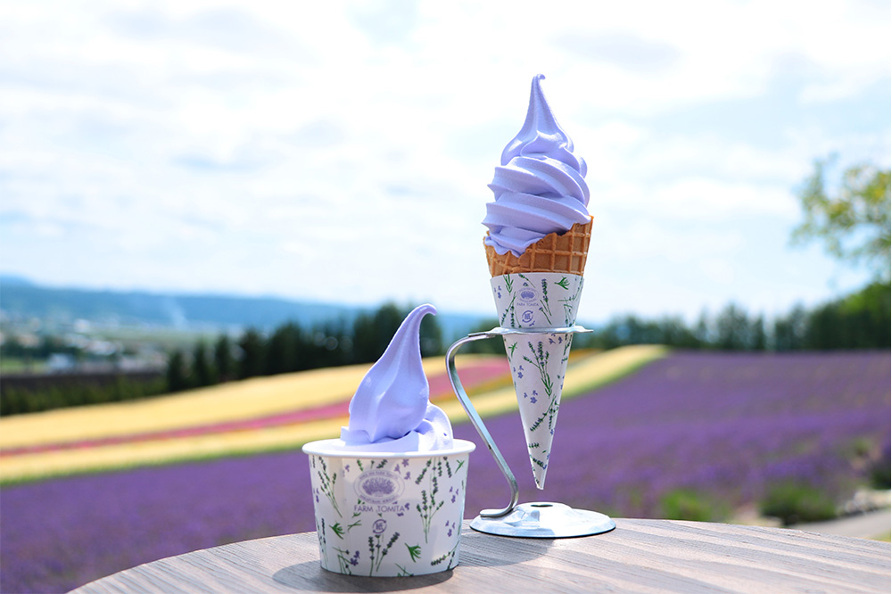
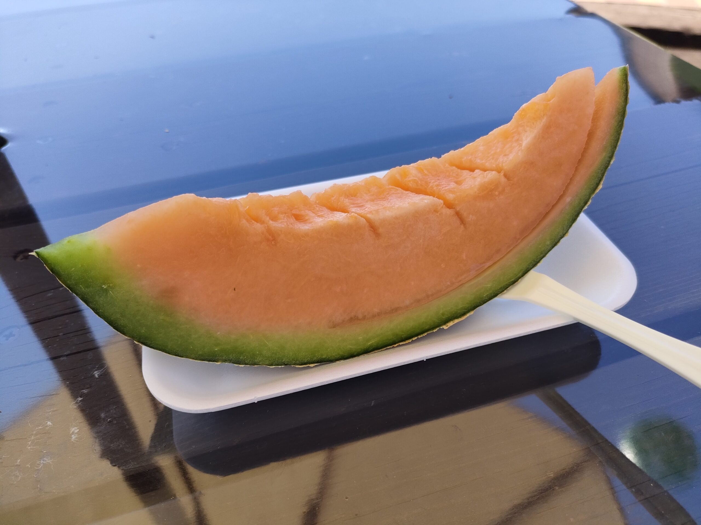
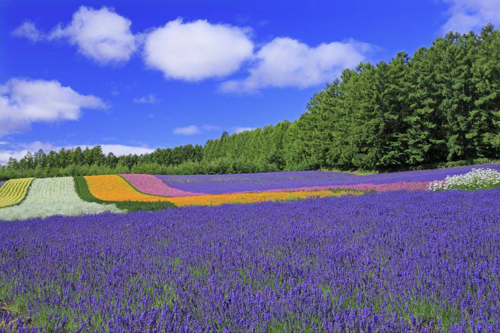

Furano Gourmet
Jingisukan Hitsuji no Oka

 

Grilled mutton restaulant with a ranch.
You can enjoy three types of lamb:
Suffolk, which is rare and has no odor.
Milk lamb, which is soft and has little fat.
White lamb, which has a little more fat and allows you to enjoy the original texture of Jingisukan.
Beberui Nakafurano-cho,Sorachi-gun, Hokkaido 071-0711 Japan
+81-167-44-3977｟May1～Sep30｠
+81-167-44-2952｟Oct1～Apr30｠
+81-90-9433-9906《Anual》
MAP CODE for Navifation: 349 169 820
Information
Map
Farm Tomita Lavender Soft Cream & Melon



You can enjoy fragrant soft ice cream with lavender extract, which is only available at Farm Tomita,
and Furano melon with fine, juicy flesh while looking out at the lavender fields.
15 Kisenkita Nakafurano-cho, Sorachi-gun, Hokkaido 071-0704 Japan
+81-167-39-3939
information
Map
Top page